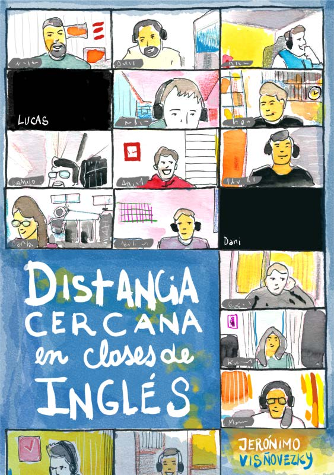
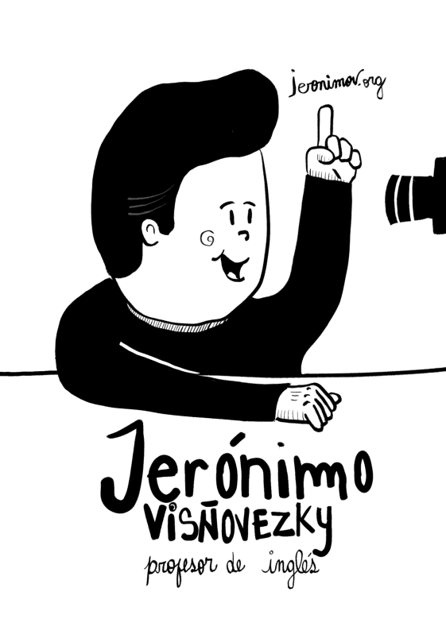
Introducción
¿Qué haría yo si fuese un buen profesor de inglés a distancia? ¿Cómo podría lograr que mis alumnos se interesen por mis clases de Zoom? Estas páginas me encuentran tratando de responder a esas preguntas, algunas veces apoyándome en mi forma de ser y otras veces cambiando mi comportamiento al punto de preguntarme ¿Soy o me hago?
Yo no soy un experto en nada. Encuentro inspiración e ideas para repensar mis modos de ser en la clase en autores que no se ocupan de las clases de inglés a distancia para adultos profesionales. Cuando presté atención noté que casi todos me los recomendó Mariana Maggio, o su libro “Reinventar la clase en la universidad” (Maggio, 2018). La mayoría habla puntualmente de la universidad y, cuando lo hace, cuestiona a la didáctica clásica: el procedimiento áulico con la explicación en el centro, el depósito bancario de conocimiento. Todos tienen conceptos que no termino de masticar, o no logro imaginar cómo es una clase de inglés con esa idea en el centro. Maggio, por ejemplo, sugiere el ejercicio de quitar la explicación de la clase para ver qué queda y, en sus palabras, “(…) poner una bomba en el corazón de la didáctica clásica.” ¿Cómo es dar una clase de inglés sin explicaciones? No lo sé, pero en esa nebulosa de ideas nuevas que exponen Serres, Maggio, Porta y Baricco yo encuentro la inspiración del ignorante, del que no sabe qué cosas son imposibles y no deberían intentarse.
Cuenta la leyenda que Apple contrató al ingeniero Tony Fadell como consultor externo para crear el iPod. Tony quería poner un disco de computadora en un dispositivo que cupiese en un bolsillo y necesitaba que cambiara rápidamente de funciones según estuviese conectado a una computadora o reproduciendo canciones. Llamó al experto en tecnologías de disco de Apple y le explicó lo que quería hacer. El experto fue tajante: “Eso es imposible.” Tras lo que Fadell señaló dos rectángulos en una mesa diciendo “Yo tengo dos prototipos funcionando.”
Muchas veces el rol del experto es el de decir lo que no se puede hacer. Es saber los límites de las propias capacidades. Esta didáctica alternativa de Edith Litwin, Mariana Maggio y Luis Porta que reniega de la explicación, y que yo tomo prestada aquí, tiene -para mí- el fuego de lo incierto, de lo confuso, de lo nuevo. Es campo fértil, lo contrario de estructura.
Aviso de paso que las señales de seriedad académica son más estéticas que rigurosas. Uno puede saber de lo que habla o parecer que sabe. En mi caso, respecto de la educación, es lo segundo. Claramente estoy explorando y, aunque quiero ser serio, de a ratos siento que estoy tratando de esquiar en el Cerro Uritorco. La altura es perfecta, el paisaje es lindo, pero yo tengo los esquís puestos y no hay nieve.
Sin embargo, yo, que trabajo de explicar y de aplicar un procedimiento que viene ya programado en los libros que uso para dar clases, y que en el mejor de los casos tengo un entendimiento borroso de lo que dice la gente que cito, me doy permiso para tomar prestado, para el uso oblicuo de sus conceptos, porque me ayudan a contestar mejor las dos preguntas del comienzo. Durante todo este texto voy a aludir a ideas que reniegan de la explicación y de la aplicación mientras sigo explicando y aplicando. Conviene recordar que estos autores hablan de la educación universitaria y nosotros damos clases en otros contextos, a veces sin controlar el currículum y con otros límites de tiempo. Lo digo una vez acá, con todas las letras, para no tener que pedir perdón en cada capítulo.
Queda la tercera pregunta: ¿Soy o me hago? Me pidieron un taller sobre el manejo del aula a distancia porque mis alumnos, algunos, dicen estar cómodos en mis clases. Si soy, si me hago, o si razono torcido, me senté a escribir lo que me pasa ahora por la cabeza y cómo es que pienso las clases a distancia, como un acto reflexivo que espera romper el hielo y abrir la charla sobre el tema. ¿Cómo nos plantamos como profes ante el aula y ante el mundo? ¿Qué pensamos de cómo aprenden nuestros alumnos? ¿Qué recursos didácticos, tecnológicos, lúdicos usamos? Empiezo yo.
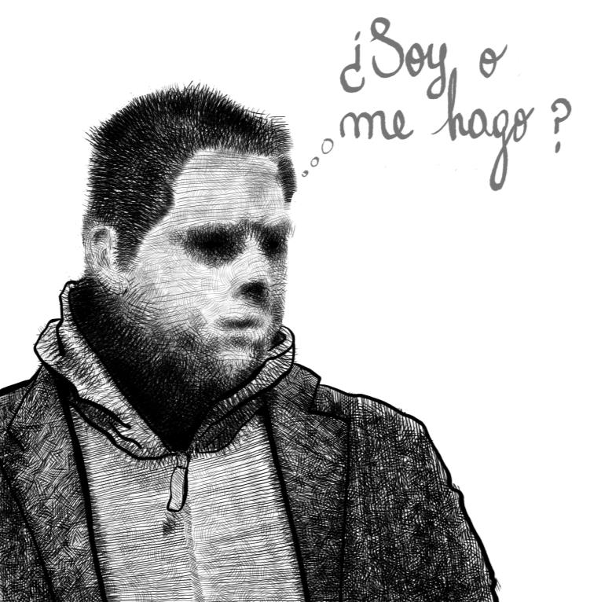
Capítulo 1
El profesor que no se acordaba de los nombres
Cursos intensivos, cerca de 2005
De los primeros grupos de los cursos intensivos de la Facultad de Lenguas que dicté cerca de 2005 no recuerdo el nombre de ningún alumno. Ni uno. Con ellos tenía una relación "profesional". Yo creía que era malo con los nombres.
Haciendo memoria, al inicio de mi práctica docente me importaba más el contenido que los alumnos. Tanto es así que no tengo recuerdos de alumnos que no participaran en la clase o que conversaran mientras yo explicaba algo. ¿Será que las clases en las que pienso se dictaban antes de que existiera el iPhone y los teléfonos modernos? ¿Será que mis alumnos eran adultos? ¿O será que había alumnos distraídos, pero yo, concentrado en lo que quería decir, no los veía?
Suelten al Kraken
Cuando una década y media más tarde retomé la carrera docente y tuve que darles clases a adolescentes y niños en el contexto de la educación pública obligatoria, noté que algunos de mis alumnos hubiesen preferido hacer gárgaras con lava antes que seguir presenciando cualquiera de mis clases.
Mantener a un grupo de niños o adolescentes callados y atendiendo era una danza que seguía un tempo, un ritmo colmado de fotos, sonidos, actividades, preguntas, y si en algún momento perdía un beat, si me distraía por un segundo, si osaba permitir un silencio… Caos, pandemonio, charla y griterío. Llamen a la directora, suelten al Kraken.
La moral de PIXAR
Así como los juguetes de Toy Story quieren jugar y los autos de Cars quieren ganar carreras, así, frente a un aula con alumnos, yo quiero dar clases de inglés. Con una obsesión que roza el autismo, termino siempre tratando de cubrir los temas del currículum antes de “los exámenes”, aunque los alumnos -sobre todo los adolescentes- tengan otros planes.
Me pasó de ser suplente y que los alumnos me invitaran a descansar: “Hoy no hagamos nada, profe.” Incluso aludían a la conducta de docentes anteriores: “Con la otra profe veíamos pelis nomás.” Y yo los escucho, pero en dos semanas es la prueba final y no pueden pasar de curso sin saber voz pasiva.
Una aproximación histórico-caricaturesca
Simplificando bastante, recordemos las inspiraciones militares de los sistemas educativos que emergieron con el surgimiento de los Estados Nación. La formación, el silencio, los saludos, la obligatoriedad de la asistencia, el uso del examen como mecanismo de control o incluso de castigo -“¡Saquen una hoja!”-, atado a una concepción tradicional del docente como fuente de conocimiento y del a-lumno, el falto de luz, como tabula rasa, como receptor pasivo en quien el conocimiento habría de ser depositado.
Una buena pregunta para hacernos en el mundo post pandemia es ¿Explicar es construir conocimiento? ¿Se puede construir explicando y aplicando? ¿Las referencias al conocimiento previo, a lo personal, a lo conocido ayudan a una construcción verdadera si -al fin de cuentas- le voy a decir al alumno lo que creo que tiene que saber? Tal vez no nos gusten las respuestas.
PPP contra el mundo
Reniego de los procedimientos inflexibles. No creo que enseñar sea repetir contenidos o secuencias, pero sea lo que sea que haga hoy en clase, me guste o no, es una variante del PPP2. El círculo de Byrne (1986) o el Engage-Study-Activate de Harmer (2007) son intentos de flexibilizar las ideas del PPP usando el juicio de los participantes respecto del punto de entrada y el orden de la secuencia (Harmer, 2007).
Lo que todas estas variantes -y mis propias clases- mantienen es la naturaleza del PPP: la explicación en el centro y la aplicación y comprobación como parte de la práctica. Maggio y Porta -en persona o en sus textos- califican a la enseñanza con explicaciones con el “bancaria” que Freire usa para la educación que trata de “depositar” conocimientos. Porta cita a Rancière para decir que el maestro explicador ejerce “una forma perfeccionada del atontamiento” (Branda & Porta, 2012).
Las críticas al PPP, que no captura la complejidad de la lengua y la divide en pastillas fáciles de masticar, se convierten en su fortaleza en una clase de 40 minutos. Cuanto más corta la clase, más rítmica, más dinámica, más activa y, tal vez solo por eso, menos aburrida.
Una buena pregunta
Ese era yo: el de los nombres olvidados, el del Kraken, el del PPP. Y sin embargo alguien quiso que cuente cómo son mis clases. A juzgar por los párrafos que siguen, mis clases son maravillosas experiencias de perpetua diversión y cambio constante, tan impredecibles como divertidas. En realidad, no sería extraño encontrar a un alumno mío bostezando mientras seguimos la secuencia del libro con el entusiasmo de quien compara números en Excel.
Si, en cambio, mis alumnos se interesasen por las cosas que hacemos en clase, no ha de ser porque yo encarne un experto manejador de reuniones a distancia. Una buena pregunta sería ¿Por qué se interesan algunos alumnos en mis clases?
Notas
- Presentación, práctica y producción. ↩
Capítulo 2
Frases sueltas de un doctorado
El secreto de Claudio Urbano
En un momento de mi vida tuve tiempo y un amigo me entusiasmó con un doctorado en educación. Ahí escuché frases, comentarios como al pasar, que transformaron mi forma no solo de enseñar sino de relacionarme con mis alumnos.
El primer día que fui llegué tarde y Claudio Urbano1 estaba diciendo que entre el alumno y el docente había una relación personal -estoy parafraseando- y ese pequeño detalle, que para tanta gente es una obviedad, a mí me cambió para siempre. Hasta entonces, me parece, yo había puesto siempre un límite entre yo y mis alumnos. ¿Se acuerdan de los nombres que no recordaba? Yo creía que era malo con los nombres. No, era distante con mis alumnos.
Hoy pienso que si un alumno no reniega de mis clases es por dos motivos:
- los aspectos, digamos, "humorístico-teatrales" de mi personalidad y
- el hecho de que ya no me pongo la careta "profesional" antes de cada clase.
Mis clases son yo tirando puentes de interés y experiencia en tono de comedia, con el PPP peleando por un primer plano que a veces no tiene.
En el contexto del doctorado escuché otras frases sueltas que me parecieron importantes y que voy a ir contando, tratando de volver sobre libros y ponencias de sus autores para encontrar -algunas veces sin suerte- la cita, la página, la fecha precisa. En el caso de Urbano ni siquiera lo intenté.
¿Por qué tan serios?
Mucho de lo que hago en el aula tiene que ver con mi personalidad. Si han visto cualquier personaje de Marvel, me conocen. Paso mi tiempo tratando de hacer chistes en medio de situaciones serias. Algunas veces, casi nunca, pasa algo tan gracioso que nos toma un minuto dejar de llorar de la risa. Casi siempre, la respuesta es una risita tenue que se disipa en lo que estamos haciendo por la lección del día. El humor es mi interfaz con el mundo y las risas son siempre parte de mis clases. (Para los efectos de sonido, ver Jingle Palette en el Apéndice 2.)
Emojis de llanto descontrolado
Volvamos a la obsesión de juguete de Pixar. Un poco exagerando esa predisposición natural, evito mostrar actitudes que contradigan estos valores. ¿Por falso? Puede ser; pero también porque, si he de cultivar una relación personal y genuina con mis alumnos, ¿qué harían ellos si les digo que descorcho un champagne cuando faltan todos y se cancela la clase?
Por qué NO estudiar sobre educación
No sé qué les pasa por la cabeza a los otros docentes, pero yo siempre quise ser un buen profesor. Siempre me pregunté qué actitud frente al aula era la más efectiva, qué era lo mejor para el alumno. Dando una clase, ¿cómo me daba cuenta de si los alumnos estaban aprendiendo? ¿Tenía que ser exigente y estricto? ¿Tenía que redondear las notas hacia abajo o hacia arriba? ¿Las notas que yo ponía eran parecidas a las que hubiesen puesto mis colegas? Si un alumno entendía menos que el resto del grupo, ¿qué tenía que hacer yo? Resulta que Luis Porta se dedica a investigar algo parecido. Expertos en educación alrededor del mundo notaron que los buenos docentes existen y fueron encontrando formas de saber quiénes son, cómo son y qué hacen en el aula.
Recuerdo dos ideas sueltas de una clase en la que Porta intentaba enseñarme el método de investigación biográfico-narrativa para conocer e investigar buenas prácticas docentes, mientras yo quería que me dijese la lista de características de los buenos docentes. ¿Serían fáciles o difíciles de emular? Así como uno usa el análisis de las características de los textos científicos para escribir textos que “suenan” científicos, así, pensaba yo, podía usar las características de un buen profesor para portarme como uno.
Ahí me di cuenta de que, como el que se anota en la carrera de Psicología para indagar la propia psiquis, yo me había anotado en un doctorado en educación para “arreglar” mis prácticas en el aula. No iba a hacer falta cursar dos años e idear una investigación que generara conocimiento nuevo. Solo tenía que levantar la mano y preguntar.
Primera idea: interesarse por que el alumno aprenda
Lo primero que mencionó como característica de estos docentes que dejan huella -y parafraseo- fue que los alumnos sienten que se interesan genuinamente por su aprendizaje. Se aseguran de que “se entienda” de lo que se está hablando. Un dato que agrego porque me parece interesante: unos meses más tarde, José Yuni, director del doctorado en educación de la UNSE, comentando sobre la idea del “buen docente”, citó una encuesta en donde la mayoría de los estudiantes habían consignado como característica de una buena enseñanza “que se entienda lo que el docente dice”. Yuni hablaba, creo, de una claridad fonética, de articulación de la lengua.
En el libro Pasiones, Cecilia Colombani (Porta et al., 2018), como corolario de una investigación que había comenzado en 2008, Porta cita lo que los alumnos dicen de esta docente a quien consideran memorable:
“La profesora posee entusiasmo y humor. Está abierta a evacuar dudas e inspira confianza”, otro: “La docente es clara en todos los conceptos que transmite y los desarrolla con una pasión admirable” … otro: “La profesora hace que sus clases tengan un carisma particular donde le pone gracia a esto y es muy bueno aprender así”. Otro: “La profesora a través del diálogo acepta comprensivamente los aportes de los alumnos y los alienta a participar”.
Claridad, humor, confianza, entusiasmo, pasión, invitación a participar. Ojalá mis clases tuviesen todo eso.
Segunda idea: dejar que se quiebre el plan
No recuerdo si fue Porta, un compañero o yo mismo quien relacionó lo que se dijo con “Tres aspectos de la filosofía de la investigación en la enseñanza” (Fenstermacher, 1989), donde el autor señala que la relación entre enseñanza y aprendizaje es como la relación entre correr una carrera y ganar. Que haya alguien enseñando no quiere decir que haya alguien aprendiendo, del mismo modo que correr una carrera no significa que se vaya a ganar. Porta estaba hablando de cómo uno de los docentes investigados dictaba la clase y dijo algo así como: es cuando los alumnos intervienen, cuando los alumnos rompen el plan, que hay más posibilidades de que se dé el aprendizaje.
Yo interpreté eso que escuché como la interrupción del plan de una clase: el docente suspendiendo el plan de ese día para tomar en cuenta al alumno, para responder a su inquietud. ¿Cuándo ese alumno ha de prestarnos más atención que cuando nos hace una consulta?3
Antes, yo contestaba las preguntas de mis alumnos. Ahora, cuando un alumno pregunta algo en mis clases: detengo el mundo. Su inquietud es mi oportunidad de que se quede con algo que le interesa conocer, revisar, saber. Nunca me gustó la casilla del plan, ni siquiera cuando el plan era mío. Doble razón para estar contento cuando la inquietud de un alumno pone en peligro la secuencia bancaria, el tedio de enseñar para que, tal vez, nadie aprenda.
Los docentes que dejan huella
Un buen lugar para comenzar es Lo que hacen los mejores profesores de universidad (Bain, 2007). Porta resume a los docentes de Bain diciendo que son docentes que creen que la enseñanza importa y que los estudiantes pueden aprender, y remata: “Lo que hace grande a un profesor, en la mirada de Bain, no es tanto lo que hace sino lo que comprende.” Pero nadie mejor que el mismo Bain para decirlo en 15 minutos en un video.
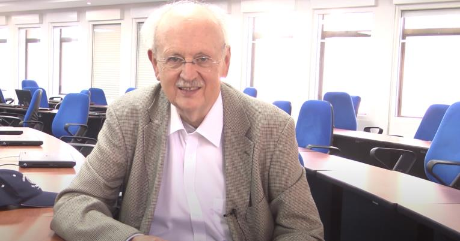
En cuanto a su propia línea de investigación, Porta comienza hablando de “buena enseñanza” (2007) y de “docentes memorables” (Branda & Porta, 2012), referidos también como “docentes que dejan huella” en 2018 (Córdoba, s. f.). Con una entrevista de la Universidad Católica de Córdoba y extractos de Pasiones se puede caracterizar a “los docentes de Porta”:
“Los profesores memorables rompen las estructuras lineales y apuestan por las emociones”.
Se caracterizan por:
- Dominar el contenido
“La profesora tiene sólida formación intelectual. Apela al humor como disruptor de lo solemne en la clase, pero con enseñanza seria”. [EE.IF. 51, 2015] Alumno entrevistado.
- Llevarse mal con las instituciones
“Les doy una bienvenida que empieza siendo afectiva más que académica. Las instituciones suelen ser dispositivos bastante perversos en lo que es el vínculo con los sujetos, las universidades no escapan a esto. Por lo tanto, el primer mimo es una cuestión afectiva, lo académico viene después. [...]” [RC1, 2015] Docente entrevistado.
- Apostar por una dimensión afectiva y emocional
“[…] la clase que “vale la pena vivir”, se traduce en el cuerpo y gestualmente en una sonrisa o, cuanto menos, en una mueca. Ese gesto del estudiante que, sin reponer palabras, admite que algo ha cambiado. ¿Ruptura? ¿Disonancia cognitiva? así lo llama el discurso pedagógico legitimado; “Eureka” la tradición científica. […]” [EMV19, 2018] Docente entrevistada.
- Romper con la linealidad del aula
“Las clases son entretenidas por cómo la docente desestructura la concepción de clase magistral donde sólo se escucha al profesor, además, sin dejar de ser profesional muestra los contenidos desde una manera coloquial, cuando es necesario para la mayor aprehensión de los contenidos.” [EE.IF. 40, 2015] Alumno entrevistado.
- Cruzar campos disciplinares
"Por ejemplo, el profesor de diseño arquitectónico que enseña a diseñar a partir de la poesía y de la música; la profesora de literatura que explica teoría literaria a partir del psicoanálisis; la profesora de filosofía que enseña filosofía antigua a partir de una perspectiva foucaultiana. Se animan a tomar objetos complejos para su enseñanza y los transforman, como si fuera la metáfora del viaje. Tienen esta condición de hacer que sus clases sean un viaje."
Nadie mejor que él mismo para resumirlo en 9 minutos en un video de YouTube.
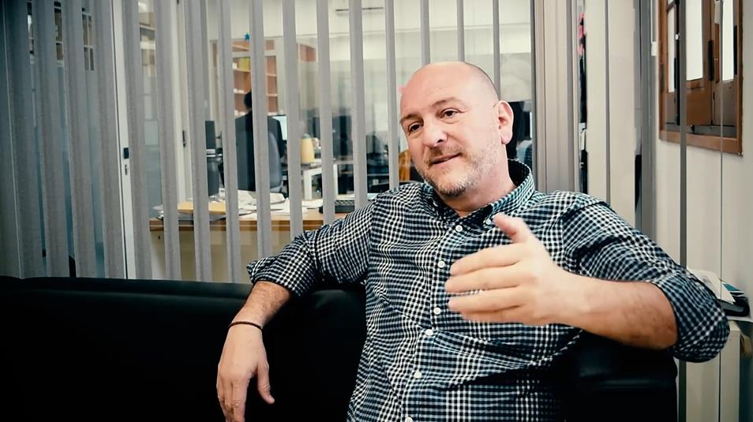
¿Puede uno leer la lista de características y convertirse en el mejor docente de la comarca? Tal vez no, pero creo que podemos ver, de entre las cosas que caracterizan a un buen docente, a la buena enseñanza o al docente memorable, cuáles ya son parte de nuestras prácticas, de nuestra forma de ser, de nuestra esencia como personas, y poner ahí el acento. Yo siempre respondí las inquietudes de mis alumnos. Nunca fue más importante un plan que una pregunta. Solo que ahora tengo un marco teórico para justificar lo que siempre hice y acaso permiso para hacerlo más seguido.
Notas
- Claudio Ariel Urbano es Doctor en Ciencias Humanas (Mención Educación), Licenciado en Psicología, docente universitario, investigador y autor de más de una docena de libros sobre investigación y psicología, entre otras categorías. ↩
- Consultado sobre esta idea del alumno que interviene / interrumpe el plan, Marcelo Alegre, Especialista en Gestión y Docencia en Educación Superior, dice: "Por lo contrario, yo como didacta, considero relevante que la enseñanza se debe planificar. Porque se entiende que toda enseñanza educativa sea intencional. Ese es el objeto de estudio de la didáctica. Si bien la planificación de una clase es hipotética y flexible, siempre se debe planificar. Caer en la "espontaneidad" de una clase no genera ningún aprendizaje." ↩
Capítulo 3
La charla y el iPhone
Serres: conocimiento objetivado y la charla
Años después de aquellas clases del Kraken, imagínense mi sorpresa cuando, leyendo Pulgarcita (2013), del filósofo francés Michel Serres, me doy con el siguiente pasaje:
“Hasta esta misma mañana, un docente, en su aula o en el anfiteatro, entregaba un saber que, en parte yacía en los libros. Oralizaba lo escrito (...) Para esa emisión oral pedía silencio. Ya no lo obtiene.
Desde la infancia, en el primer y segundo ciclo, comienza a formarse la ola de lo que se llama la charla, se levanta como un tsunami en el secundario y ahora acaba de alcanzar la educación superior, donde anfiteatros, desbordados por ella, están colmados, por primera vez en la historia, de un murmullo permanente que vuelve penosa toda escucha o vuelve inaudible la vieja voz del libro.”
No era yo. O no era solo yo. Ya no podemos, según Serres, pararnos frente a un aula a recitar un conocimiento “porque ese saber anunciado ya lo tiene todo el mundo. Íntegro. A disposición. Al alcance de la mano. Accesible por la web, Wikipedia, el celular (...) Explicado, documentado, ilustrado, sin más errores que las mejores enciclopedias.”
Baricco y la revolución mental
Baricco comienza su libro The Game (2019) hablando sobre la obsesión de algunos por caracterizar los actos de los niños -dispersos y pegados a dispositivos- como una involución, una degradación, un apocalipsis cultural. Estas quejas son formas de defender el pasado, mientras que el modo de actuar de los jóvenes es el cambio hacia una nueva civilización, la nueva forma de inventar el futuro. Lo que estamos viviendo es una revolución tecnológica que, en vez de ser un factor que afecta conductas, fue en realidad precedida por una revolución mental. Esa revolución mental permitió primero la invención de las computadoras, las redes y toda la infraestructura de la revolución tecnológica, que entonces no es la causa de los cambios mentales sino su resultado.
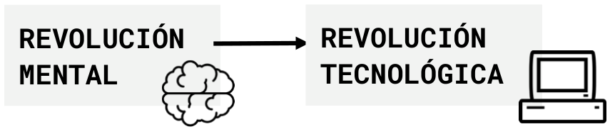
Yo tomo esta parte de Baricco para recordar que las actitudes de mis alumnos hacia las redes no son un problema, una decadencia a corregir, sino una nueva forma de interactuar con el mundo. El futuro.
Premio arriba
Según Baricco, la figura mental que dominó la cultura del siglo XX era una pirámide invertida o un iceberg invertido. En la superficie: caos, percepciones superficiales. Con tiempo, trabajo y paciencia uno podía ir acercándose al verdadero sentido de las cosas. Escondido bajo sacrificios, esfuerzos o sufrimientos. Al final se encontraba la síntesis, "lo sencillo dentro de lo complejo."
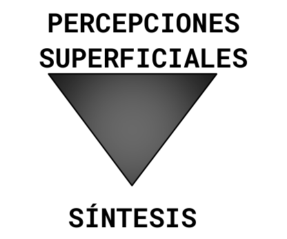
El iPhone da vuelta la pirámide y pone el premio arriba. La matemática en lo profundo y los resultados simples que se leen en la superficie. "El premio arriba, el esfuerzo abajo." iPhone, Google, Amazon, Instagram, YouTube, WhatsApp: todos tienen esa lógica. "Con instrumentos como esos la insurrección digital golpeaba de lleno el corazón de la cultura del Siglo XX, desintegrando su principio fundamental: que el núcleo de la experiencia estaba sepultado en profundidad que era accesible solo con esfuerzo."
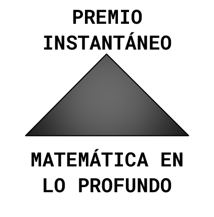
Yo usé estas ideas para pensar en la velocidad de entrega del contenido en mis clases. Pensé en cómo el PPP expresa un poco estas ideas simplificando las complejidades de la lengua. Pensé en cómo Moodle pone el contenido a menos clics que e-ducativa. En mis clases ya no pospongo lo interesante: lo digo primero. Ya no espero para responder una pregunta: la contesto por completo en ese momento. ¿Querés saber algo ahora mismo? Acá está, antes, en la superficie, ahora.
La salida según Serres
Entonces, ¿cómo capturamos la atención de estos alumnos nacidos con el conocimiento disponible en el celular, acostumbrados al premio arriba? Serres nos da la solución: “Ya nadie necesita a los portavoces de antaño, salvo si uno, original y raro, inventa.”
Y si hay alguien que sabe de inventar es Mariana Maggio.
Capítulo 4
Inventar (y fallar)
Maggio y la creatividad
Mariana Maggio es una genia de toda genialidad y en Reinventar la clase en la universidad (2018) pregunta “¿Ya dimos una clase idéntica? ¿Casi igual? ¿Similar?” Si la respuesta es afirmativa, nos propone hacerla de otra manera. “¿Qué es lo que podemos inventar? Lo primero es la propia clase. Me educó Edith Litwin que inventaba clases en sus cuadernitos. Así aprendí que todo se inventaba: se construía una estructura original para la clase (...)”
Entre los rasgos de lo que ella llama Enseñanza Poderosa (Maggio, 2016) hay uno que me quedó dando vueltas: “Ofrece un diseño que en sí es original y que no es el de la tradición heredada ni el de la técnica, por más sofisticada que esta sea. Ese diseño está formulado en tiempo presente (...): no viene del pasado, ni lejano ni cercano.” Mariana misma lo explica en 3 minutos en este video.
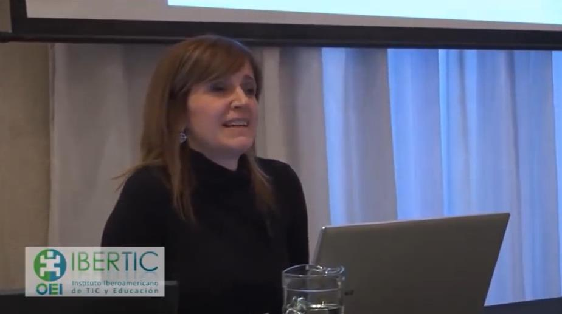
Para una de sus clases, Maggio organizó de un día para el otro un mini congreso. Cuando los alumnos llegaron a cursar el lunes se encontraron con que la clase era un congreso, con disertantes importantes que la profesora había convencido de participar.
Lo que me pregunto yo es, si tengo que ser creativo, si las clases deben ser diferentes, ¿en qué momento invento las nueve clases que tengo que dar por día? ¿Cómo hago?
Para inventar hay que poder fallar
La creatividad -digo yo, no Maggio- florece en contextos en los que se puede fallar. Si no puedo intentar cosas nuevas, no puedo ser creativo. Las prescripciones sobre cómo dar clases y el micromanejo son, creo, enemigos de la creatividad, elemento esencial de una clase que no se percibe como monótona o repetitiva.
Tengo la anécdota de mi cuadernito de hojas para acuarelas que compré hace unos años. Quería aprender a pintar y las hojas comunes se doblaban por el agua. Fui y pagué lo que para mí era una fortuna por un cuaderno con doce hojas gruesas. Solamente doce. El problema es que no quería desperdiciar esas doce hojas caras, así que por años el cuadernito siguió sin uso, vacío, limpio. Yo seguí también igual de inútil con las acuarelas.
El aburrimiento y el desacierto no pueden ser tabú en la educación. Para innovar hay que poder intentar algo que falle, dar una clase imperfecta, probar una actividad que los alumnos no encuentren atractiva.
Lo contrario, el intento de implementar “buenas prácticas”, es decir, de copiar lo que funcionó para otro profesor, para otro grupo, en otro momento, puede terminar de acartonar una experiencia de la misma forma -casi exactamente la misma- que uno puede calcar un dibujo y se nota a lo lejos que fue calcado. Creo que los alumnos prefieren las clases desestructuradas, a mano alzada.
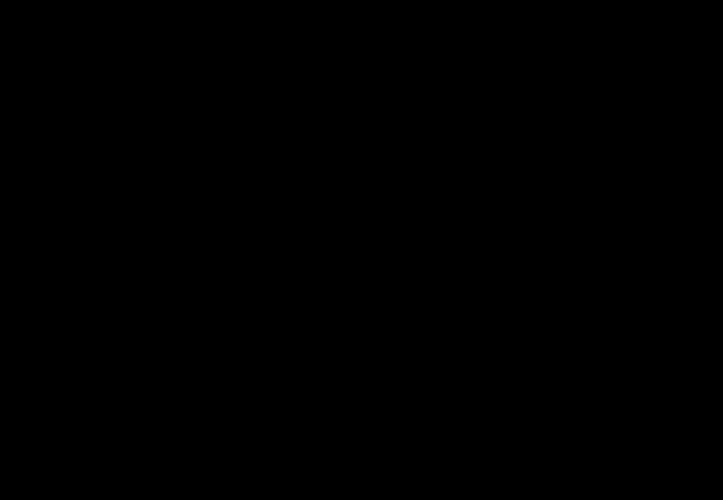
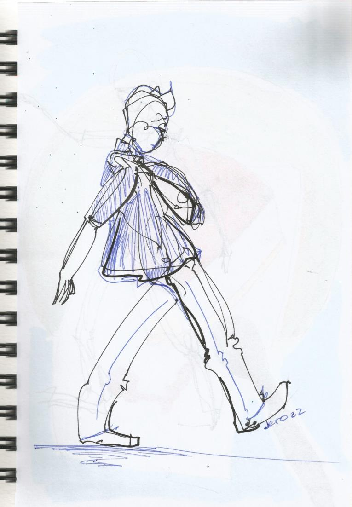
Estas páginas, interpretadas como instrucciones a seguir, no harán más que acartonar. Tomadas como ideas para inspirar la creatividad, tal vez ayuden a cambiar estructuras y a soltar la muñeca para trazar líneas propias.
2020: inventé
Un día, tal vez marcado por la apatía de algunos alumnos adolescentes, imaginé que en esa secuencia entre los "buenos profesores" de Bain y los "docentes memorables" de Porta podría existir una categoría de "docentes fascinantes", capaces de captar la atención de cualquier alumno. Mientras pensaba en dedicar mi tiempo a investigar si esos docentes existían, se me ocurrió que Serres y Maggio ya me habían dado la llave de la atención: la inventiva.
Entonces, a principios de la pandemia, en pleno 2020, inventé. Inventé clases, inventé funciones de los encuentros, inventé formas de repartir los contenidos en la semana. Algunas de esas invenciones se quedaron para siempre.
Lo contrario de un video curso
Profundas o superficiales, en mis clases a distancia me gusta marcar diferencias con el modelo del alumno escuchante, de brazos cruzados, que lucha por no dormirse.
Lo primero que hago con alumnos nuevos es enseñarles a usar las herramientas de anotación en pantalla. Hay que tener en cuenta que no todos los programas de reuniones permiten que los alumnos hagan esto. Anotar, rayar, escribir es hacer algo. Es estar activo. Es participar. ¿Puede hacerse en un libro impreso? Sí, pero cada alumno ve solamente su libro. A distancia, ¿no es mejor colaborar en la pantalla?
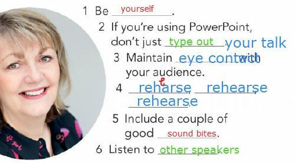
Un alumno individual, respondiendo a mi pregunta sobre qué le gustaba de mis clases, dijo que “Lo contrario sería un video curso.” Si un video curso tiene que ser consumido pasivamente, viendo sin hacer, entonces es bueno ser “lo contrario”.
Sobre esta idea de “lo contrario”, en otro plano, trato de alejarme de los usos policíacos del control de asistencia y de las concepciones punitivas de los exámenes. Intento fomentar la presencia desde el interés y el compromiso, co-diseñando y co-organizando los objetivos y los tiempos de los exámenes cuando es posible. El profesor al frente, en oposición a los alumnos, el profesor controlador, puede representar una relación adversaria. En mis clases de inglés para adultos a distancia tenemos todos el mismo objetivo: que el aprendizaje ocurra. Nada sucede “en contra” de nadie.
El video de Minecraft
Y siempre inventar funcionó. Tomando la respuesta a las actividades, viendo el porcentaje de alumnos que hacía la tarea, los cambios funcionaban por un tiempo. Luego el interés caía otra vez.
Volviendo de las vacaciones de julio, para una clase de alumnos de entre 15 y 16 años, grabé un video de Minecraft en el que, además de mostrar "mi mundo" usando el vocabulario que habíamos visto, daba tres consignas. Creí que la estaba rompiendo, que era un baluarte del constructivismo, me imaginaba aceptando el Nobel de profesor de inglés.
La precisión de los datos de reproducción de YouTube, sin embargo, contaba otra historia. Ni siquiera todos los alumnos abrieron el link; creo que faltaba un 30%. De los que lo abrieron, casi nadie lo vio entero. La gráfica de reproducción mostraba claramente que quienes habían visto el video saltaron a las secciones donde se veían las actividades.
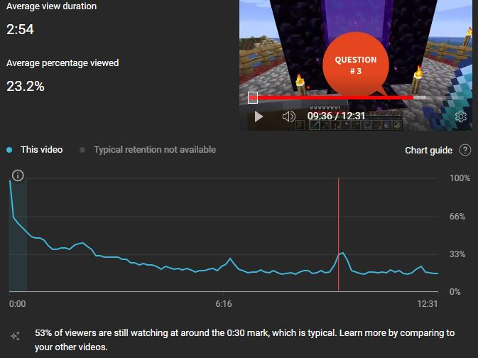
Comparado con cualquier video de Minecraft de YouTube, el mío era largo y aburrido. Pero yo no sabía que estaba compitiendo con PewDiePie, MrBeast o Luisito Comunica. Yo creía que repasar más o menos vocabulario mientras el profe mostraba un mundo de Minecraft iba a ser suficiente para captar la atención de mis alumnos.
La invención me llevaba tiempo, aunque mucho más tiempo me llevaba armar e implementar ideas que, tras horas y horas de trabajo, se consumían en minutos y algunas veces, pocas, parecían ni siquiera funcionar. No importaba, porque en 2020 si hay algo que tenía era tiempo.
Capítulo 5
Si no se puede inventar: alternar
De la invención a la alternancia
Pero a medida que me fui quedando sin horas libres, mientras iba llegando al máximo de 200 horas reloj de clases por mes, fui cambiando inventiva por alternancia. Alternancia dentro de un procedimiento, que no es justamente lo que propugnan quienes usaba de inspiración. Alternando formas de presentar, practicar y producir para intentar mantener a los alumnos interesados. Pensando siempre que no es mi trabajo entretener, que los alumnos deben esperar una clase que algunas veces es inevitablemente aburrida, pero "poniéndole onda" y cambiando entre diferentes modos de todo lo que se me ocurra.
Sorpresa
Sabiendo que la clave está en inventar -que yo interpreto como hacer algo nuevo o muy diferente- y sabiendo que me las arreglo para alternar, algunas veces me estiro un poco y alterno la clase entera. Doy una lección o un estudio de caso con juego de roles de un libro diferente. Sorpresa.
Siempre me acuerdo de Howard Stern, tal vez el presentador de radio más famoso de EE. UU. En un documental sobre su fama un entrevistado dijo: "Nunca sabías lo que iba a decir en la siguiente frase." Hay algo en la posibilidad de sorpresa como gancho de la atención. ¡Sorpresa! En esta clase tenemos que hacer una campaña de marketing para una empresa que quiere entrar en América Latina. Me parece que los alumnos disfrutan de esos cambios momentáneos. Imagino que es por la misma razón que los alumnos de Maggio se interesan por las clases que ella inventa.
Yo no creo poder sorprender a mis alumnos como ella con su congreso, organizando todo desde cero para cada clase del día, pero puedo apoyarme en otros libros, en material extra, en ideas que tuve antes, en cosas que acaban de funcionar con otro grupo, para ir condimentando la experiencia de mis alumnos con alternativas, variedad y, de vez en cuando, una sorpresa.
Lo digital y lo analógico
Baricco narra la anécdota de haber filmado una película en 2007, en el límite del uso del celuloide como medio de grabación. Se filmaba en celuloide, se digitalizaba para editar y aplicar efectos, y se volvía a grabar en celuloide para distribuir el film entre los viejos cines. El advenimiento de lo digital simplificaría las cosas, pero dice Baricco: "Los viejos de la profesión sabían que en lo digital se perdía una belleza, una magia, algo que incluso podía definirse como el alma del cine."
Alessandro tuvo la idea de pedirle a su director de fotografía que proyectase una escena en celuloide primero y luego en digital. Prestó atención y no encontró diferencia hasta que el director de fotografía le indicó que mirase el borde de la pantalla. "En ese momento la proyección era un celuloide: miré: el borde oscilaba. No mucho, pero oscilaba. Como una vibración. Luego puso la proyección digital. Mirá el borde, me dijo. Clavado (...) Con el celuloide la pantalla parece que respira, entendí. Con lo digital está clavada en la pared, y punto (...) Desde entonces sé que aquello cuya carencia sentimos, en cualquier objeto digital, y en definitiva en el mundo digital, es ese aliento, esa oscilación, esa irregularidad.”
Yo uso estas palabras de Baricco para entender las diferencias que reconozco entre un dibujo digital y uno en papel. Las uso para variar, por ejemplo, jugando un ahorcado o un wordle digital y luego, en otra clase, uno dibujado a mano en una hoja. No es lo mismo.
¿Será que eso que extrañamos de las clases presenciales tiene que ver con que lo analógico vibra, respira, tiene aliento? No lo sé.
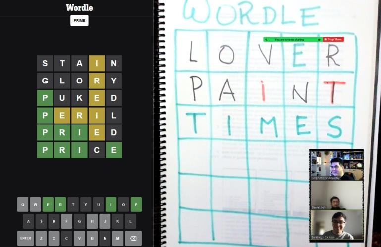
Capítulo 6
Entonces, ¿soy o me hago?
Me hago
Un tema a dejar muy en claro es que, con el método que fue puliendo durante años, Porta encuentra en los docentes memorables gente que rompe con la didáctica clásica, la desarma y hace algo mejor, con más sentido, -y estas son mis palabras- más real.
Los libros de inglés suelen tener tatuada de fábrica una lección basada en una secuencia de acciones, ejercicios y explicaciones que el docente ha de llevar a cabo, y que según Porta pueden llegar a ser, más que enseñanza, una forma de atontamiento.
Como quien usa los argumentos anarquistas de Noam Chomsky para justificar el estatismo totalitario, así nosotros intentamos emular características de docentes que dejan huella como revestimiento de un procedimiento áulico con la explicación en el centro.
Avisé al principio que iba a hacer un mal uso de los textos que cito, y lo sostengo: siento que los estoy traicionando. Los estoy usando para recubrir superficialmente prácticas arraigadas en la didáctica clásica. Entonces, en cierto modo: me hago. Es una fachada, un disfraz, una máscara. Quiero emular, copiar, parecer un buen profesor, pero uso en mis clases un libro con el procedimiento áulico clavado en las páginas. Digo que hay que pensar en cada clase y no copiar lo que funcionó en otras, pero uso ese libro que fue creado lejos de todos mis alumnos4. ¿Por qué lo hago entonces? Porque creo que funciona. Creo que la cosa funciona mejor introduciendo ideas de esta otra canasta. Esa canasta en la que Litwin le enseña a Porta y a Maggio, y Maggio me manda a leer a Serres y a Baricco. Luego pasa que yo no veo en Baricco lo que ve ella; pero igual funciona. Chueco, oblicuo, mal hecho: funciona.
¿Cómo sé que funciona?
Primero, intuyo que a mis alumnos les gustan mis clases porque les veo la cara. Los comentarios al pasar son positivos.
Tratando de mejorar la puntería de este taller, pregunté a unos cuantos alumnos qué características de mis clases les agradaban -hermosa pregunta para pescar cumplidos- y casi todos mencionaron el “comienzo desestructurado”, que “no arranca con el libro” y que se da una “conversación informal” donde se pueden “contar cosas personales”, lo que “no es común” y les “parece beneficioso”.
Uno fue más lejos y dio un ejemplo (que traduzco): "Otras profes dicen 'Qué tal chicos. ¿Cómo les fue en el finde?' Pero no quieren saber cómo me fue." El ejemplo del alumno, para mi horror, recita palabra por palabra la pregunta que yo mismo les hago al comienzo de la primera clase de la semana. Es exactamente lo mismo que digo yo. Sin embargo, cuando soy yo el que lo dice, él interpreta que la pregunta es legítima. Y tiene razón.
Así como nos damos cuenta de que ni el cajero del supermercado ni el agente de la mesa de ayuda de la empresa de celular es auténtico cuando nos desea un buen día, así nuestros alumnos detectan lo genuino de nuestras interacciones. Urbano tenía razón.
Pero esos comentarios no valen del todo, porque la relación entre docentes y alumnos no es simétrica. Si mi peor profesor me preguntase qué me parecen sus clases, diría “Geniales, profe”, no vaya a ser cosa que me baje la nota.
Por eso insistí en pedir -casi exigir- las devoluciones anónimas que mis alumnos habían dado a MoveOn Idiomas. Yo esperaba un número del tipo “20 alumnos indicaron que les gustan tus clases”. Pero me mandaron transcripciones.
Eran unas 25 devoluciones y me avisaban que no copiaban todas porque las ideas se repetían: “Lo más destacado que se repite: dinámica, buena onda y profesionalismo (…) también la predisposición de explicar mil veces (…) la flexibilidad.”
La frase “La dinámica de la clase”, que en serio se repite bastante, ¿no estará hablando de la inventiva, la alternancia y probar hacer cosas iguales de distinto modo para que los alumnos no se cansen? Cerca pega “El ritmo de la clase” o “Los recursos que se utilizan para cada tema”, “Me encanta cómo encara la clase”.
“Buena onda”, “Buena actitud”, “Sus clases son divertidas” pasa por mi forma de ser, por no tomarme a mí mismo muy en serio en algunos contextos. Es la única característica que me parece que no traté de cultivar y que veo como parte de mi forma de ser. Hay varios “profesionalismo”, “muy profesional”, “súper profesional” que, me parece, responden a que trato de no llegar tarde y a que las fallas técnicas no interfieran con mi capacidad de dar clases.
Eso de “predisposición de explicar mil veces”, “se toma el tiempo de explicar cualquier duda”, “excelente predisposición para explicar cada tema” es algo que hago sabiendo que es una característica docente que los alumnos valoran. Así, en este contexto de adultos a distancia, si un alumno me pide una revisión de TODOS LOS TIEMPOS VERBALES, se la doy. Es una clase larga, complicada, llena de preguntas, pero se conjugan varios aspectos del buen profesor (o del docente memorable) a la vez: 1) muestro interés por el aprendizaje del alumno; 2) respondo a un tema que le interesa, algo que le preocupa y quiere solucionar (si le digo eso que quiere saber, me va a prestar atención; se entiende después la devolución “la adaptación del profesor a mis intereses personales”); y 3) estoy, a la vez, mostrando que conozco mi disciplina. Así que no me sorprende el “con sólidos conocimientos”. Uno va más allá y dice “Jero es un genio”.
¿Soy un genio más genio que mis colegas? Claro que no. ¿Qué devolución daría el alumno si, cuando me pide repasar los tiempos verbales, hiciese yo lo que hacía antes y tratase de esquivar el tema aludiendo a que lleva mucho tiempo? ¿Dirían mis alumnos que mi predisposición es excelente si, cuando me preguntasen algo, los mandase a fijarse en el libro o en un diccionario? ¿Dirían que soy profesional si llegase 2 minutos tarde a cada clase? Claro que tuve el tino de no pedir el feedback negativo, así puedo pasar meses escuchando solo las opiniones lindas sobre mi modo de dar clases. Y esas partes lindas parecen reflejar, hoy, en esta distancia post pandemia, justamente las reacciones que yo anhelaba generar en mis alumnos. Entonces, repito: mal entendidas, mal aplicadas, por lo menos en mis clases estas ideas funcionan.
Quiero ser
Quiero ser, entonces trato de estar disponible, de ser claro en todo sentido. Trato de promover actividades cortas, entretenidas, en las que fomento la interacción de los alumnos escribiendo, seleccionando, uniendo con flechas, tachando. Invento si puedo y, si no, varío, alterno, cambio. Aspiro a por lo menos evitar la monotonía adormecedora, pero no siempre lo logro.
Quiero ser. Intento, trato, pienso, pruebo, me equivoco y alguien se decepciona. Pruebo de nuevo, busco en YouTube y en el último segundo agrego algo distinto. Quiero ser, entonces llego temprano, prendo un sahumerio y las luces del fondo, pruebo el micrófono que siempre funciona, conecto Zoom, Alt+U para la lista vacía de usuarios. Acomodo el mate y la botella de agua fría, me fijo si estoy peinado usando la cámara. Abro el calendario, el archivo de asistencia, el libro. Hay alguien en la sala de espera, admito, me acomodo en la silla, vuelvo a fijarme si estoy bien peinado, tres, dos, uno.
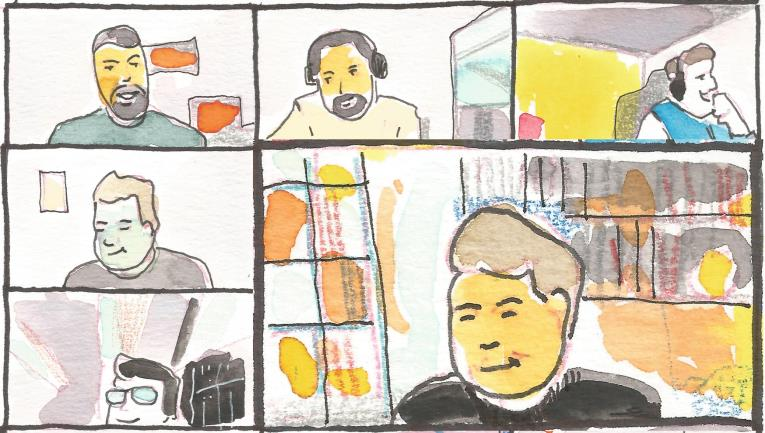
Notas
- Aunque yo creo que es una ventaja que los libros de inglés se creen en Inglaterra o Estados Unidos. ↩
Apéndice 1: Hardware
Micrófonos
La claridad de la voz es un aspecto esencial, y algunas veces la combinación de la distancia del micrófono de una laptop y una habitación con paredes vacías que reflejan el sonido termina generando un eco que puede llegar a ser molesto.
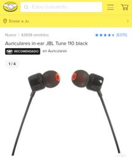
JBL110
La solución más barata es usar auriculares in ear con micrófono. Esto acerca el micrófono a la cara, lo que reduce el eco. Entre esto y el micrófono que sigue, un corbatero como el famoso y barato Boya BY-M1.
HyperX Solocast
Lo que sigue es un micrófono USB. Ese conector suele indicar que el micrófono tiene incorporada una placa de sonido.
Un aspecto a tener en cuenta en cualquier micrófono es el patrón polar. Cardioide (derecha) significa que el micrófono toma el sonido delante de su sensor, y omnidireccional (izquierda) significa que capta el sonido en todas direcciones. Para ambientes con mucho ruido, es mejor un micrófono cardioide.
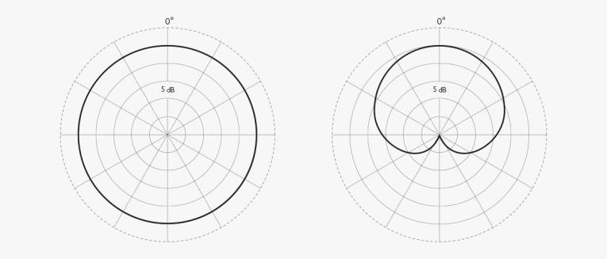
Cámaras
“Como te ven te tratan”, dijo la filósofa argentina Mirtha Legrand sin pensar en las cámaras de las laptops. Si la imagen de la cámara de tu compu deja que desear, está el problema de la cantidad de marcas y modelos de cámaras. Una cámara china es mejor que nada, pero si lo que buscamos es mejorar la calidad hay un atajo: Logitech. Logitech tiene la que viene siendo el estándar en webcams: la C920. Esta cámara es full HD (1080p) y un poco costosa. Afortunadamente, para quienes tenemos un presupuesto ajustado, hay modelos de Logitech con menos resolución (720p) y una excelente calidad de imagen.
C270 y C505
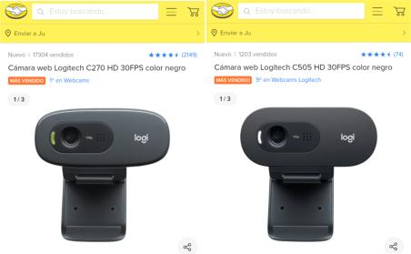
La C270 y la C505 son casi idénticas. Yo tengo las dos y no noto diferencia en la calidad de imagen.
C920
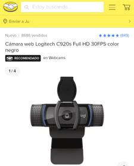
Si el dinero no es problema, hay cámaras muchísimo más caras, pero probablemente la C920 sea más que suficiente.
Tabletas digitalizadoras
Una forma amena de interactuar con la pantalla son las tabletas digitalizadoras, que nos permiten corregir, marcar y dibujar si el software que usamos para conectarnos cuenta con esas funciones. Casi cualquier tableta será suficiente, aunque tal vez sea sensato no comprar las Genius.
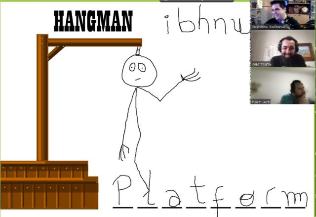
XP-Pen Star G430S
La opción barata con más prestaciones. Más niveles de presión y más resolución.
Huion 420
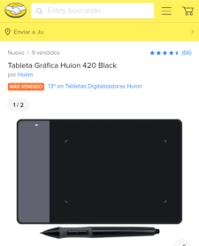
Tengo tabletas de todas las marcas y la Huion es la que más uso. Este modelo suele ser lo más barato que se puede encontrar.
Wacom One
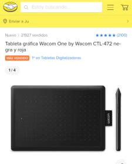
Es la marca estrella. Este es el modelo más económico de la marca y aun así suele ser 30% más caro que las otras tabletas listadas acá.
Apéndice 2: Software
Sobre la capacidad técnica
La capacidad técnica, en las clases a distancia, está antes que la capacidad pedagógica. Tiene, a mi modo de ver, el valor de lo motriz. Conocemos las diferencias entre la educación presencial y la educación a distancia, pero también sabemos de las semejanzas. Si no me sé conectar al software que usa una institución, no puedo estar presente. No saber entrar es no poder “estar”. No saber compartir una imagen, un audio, una pantalla es no poder mostrar, no poder plantear una pregunta. Un docente de inglés a distancia debería tener por lo menos la capacidad técnica de un niño de 10 años. Es gracioso porque es verdad.
Herramientas para el aula
Imprimir pantalla lanza recorte y anotación
Otra forma de consolidar actividades es compartir una imagen de lo hecho en pantalla en un grupo de WhatsApp o por email. Se puede configurar recorte y anotación para que se ejecute cada vez que presionamos ImpPnt (Print Screen / Imprimir pantalla).
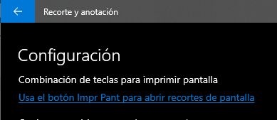
Jingle Palette
Jingle Palette se configura con tus propios sonidos y te permite reproducirlos haciendo clic en cualquiera de sus 30 botones. Podés bajar archivos mp3 o convertir videos de YouTube a mp3 y cortar audios cortos.
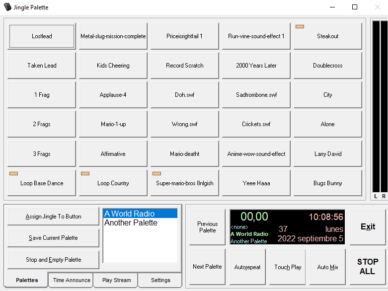
Bajar canciones de YouTube
Se pueden bajar archivos .mp3 desde YouTube con software como JDownloader o sitios como mp3y.download.
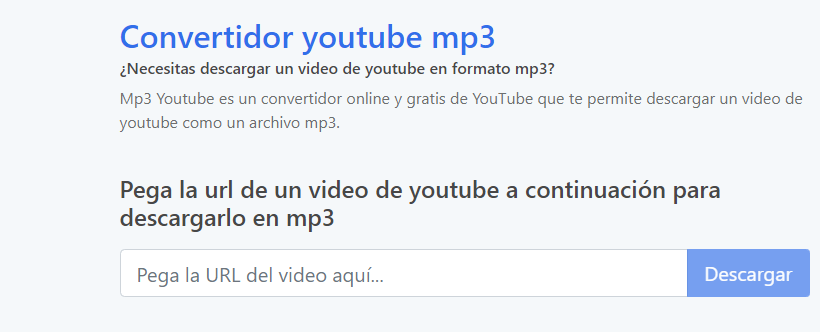
Cortar audios con Audacity
Audacity te permite abrir gran cantidad de archivos de audio, editarlos y exportarlos a mp3.
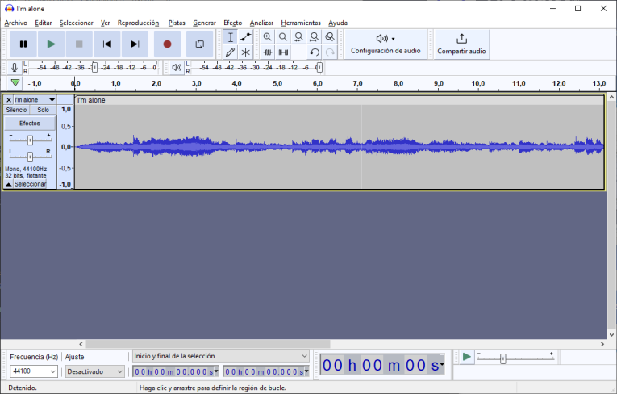
Atajos de teclado de Zoom
Alt: activar/desactivar la opción Mostrar siempre los controles de reunión en la configuración General.
Alt+V: iniciar/detener video.
Alt+A: silenciar/reactivar audio.
Alt+M: silenciar/reactivar el audio para todos excepto el anfitrión. Nota: solo para el anfitrión de la reunión.
Alt+S: abrir la ventana de pantalla compartida y detener la pantalla compartida. Nota: solo funcionará cuando la barra de herramientas de control de la reunión esté en primer plano.
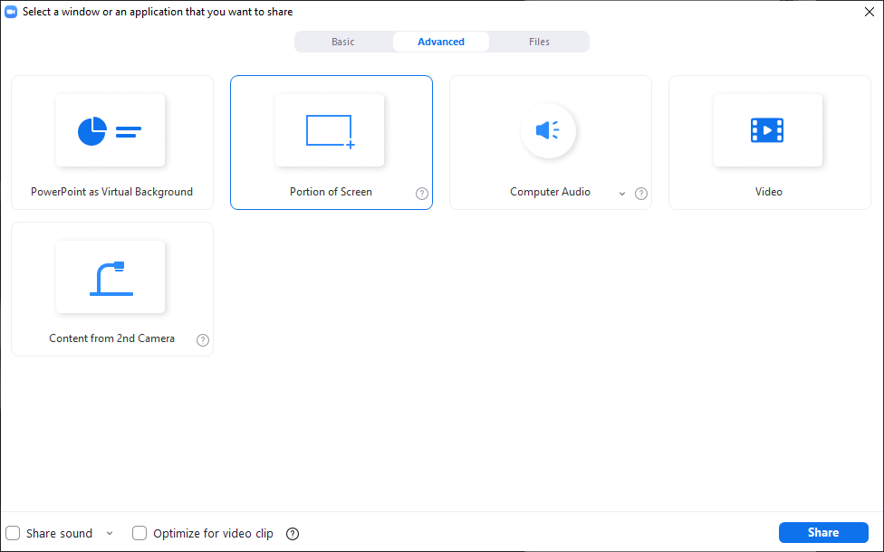
Alt+T: pausar o reanudar la pantalla compartida. Nota: solo funcionará cuando la barra de herramientas de control de la reunión esté en primer plano.
Alt+R: iniciar/detener grabación local.
Alt+C: iniciar/detener grabación en la nube.
Alt+P: pausar o reanudar grabación.
Alt+N: cambiar cámara.
Alt+H: mostrar/ocultar panel de chat de la reunión.
Alt+U: mostrar/ocultar panel de participantes.
Alt+Y: levantar/bajar la mano.
Ctrl+Alt+Mayús+H: mostrar/ocultar los controles flotantes de la reunión.
Atajos de teclado de Google Meet
Ctrl+Alt+S: indicar quién está hablando en un momento concreto.
Ctrl+Alt+I: indicar la información actual sobre la sala.
C: mostrar u ocultar los subtítulos.
Ctrl+E: encender o apagar la cámara.
Ctrl+D: silenciar o activar el sonido del micrófono.
Ctrl+Alt+K: aumentar el número de recuadros de participantes.
Ctrl+Alt+J: reducir el número de recuadros de participantes.
Ctrl+Alt+C: mostrar u ocultar la ventana del chat de la reunión.
Ctrl+Alt+P: mostrar u ocultar participantes.
Ctrl+Alt+H: levantar o bajar la mano.
Ctrl+Alt+M: minimizar o ampliar tu video.
Barra espaciadora: pulsar para hablar.
Atajos de teclado de Microsoft Teams
Ctrl+Mayús+C: iniciar llamada de audio.
Ctrl+Mayús+U: iniciar videollamada.
Ctrl+Mayús+H: finalizar llamada de audio.
Ctrl+Mayús+H: finalizar videollamada.
Ctrl+Mayús+M: activar o desactivar audio.
Ctrl+barra espaciadora: reactivar temporalmente el audio.
Ctrl+Mayús+L: anunciar las manos levantadas (lector de pantalla).
Ctrl+Mayús+K: levantar o bajar la mano.
Ctrl+Mayús+E: iniciar sesión de compartir pantalla.
Ctrl+Mayús+O: activar o desactivar video.
Ctrl+Mayús+D: rechazar el uso compartido de la pantalla.
Ctrl+Mayús+A: aceptar el uso compartido de la pantalla.
Ctrl+Mayús+Y: admitir personas de la notificación de sala de espera.
Reproductores de audio y video
Yo recomiendo tener siempre instalado VLC, porque reproduce todo, pero el mejor es WMC, porque reproduce secuencias de archivos presionando “siguiente”.
Windows Media Classic
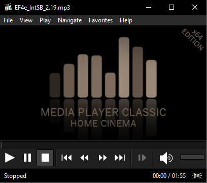
Este reproductor es liviano y, si está reproduciendo el audio 2.3.mp3, hacer clic en siguiente reproducirá el 2.4, luego el 2.5. No hace falta volver a la carpeta para cada archivo.
VLC
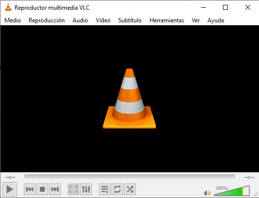
Este reproductor lee hasta el diario del domingo. Hay pocos archivos que no pueda reproducir. No puede faltar entre el software de un docente que reproduce archivos multimedia. Pero tiene esa desventaja frente al WMC.
Bibliografía
Bain, K. (2007). Lo que hacen los mejores profesores de universidad. Universitat de València.
Baricco, A. (2019). The Game. Anagrama.
Branda, S., & Porta, L. (2012). Maestros que marcan. Biografía personal e identidad profesional en docentes memorables. Revista currículum y formación del profesorado, 16(3).
Córdoba, U. C. de. (s. f.). Docentes que dejan huella. Universidad Católica de Córdoba | noticiasucc. Recuperado 21 de noviembre de 2022, de http://www.ucc.edu.ar/noticiasucc/docentes-que-dejan-huella/
Fenstermacher, G. D. (1989). Tres aspectos de la filosofía de la investigación sobre la enseñanza. 25.
Harmer, J. (2007). The practice of English language teaching (4. ed., 2nd imp). Pearson/Longman.
Maggio, M. (2016). Enriquecer la enseñanza (1era ed). Paidós.
Maggio, M. (2018). Reinventar la clase en la universidad. Paidós.
Porta, L. (2007). La buena enseñanza a partir de la narrativa de los alumnos. Diálogos Pedagógicos, V(10), 9-19.
Porta, L., Álvarez, Z., & Martinez, C. (2018). Pasiones, Cecilia Colombani (1.a ed.).
Serres, M. (2013). Pulgarcita: El mundo cambió tanto que los jóvenes deben reinventar todo: una manera de vivir juntos, instituciones, una manera de ser y de conocer. Fondo de Cultura Económica.